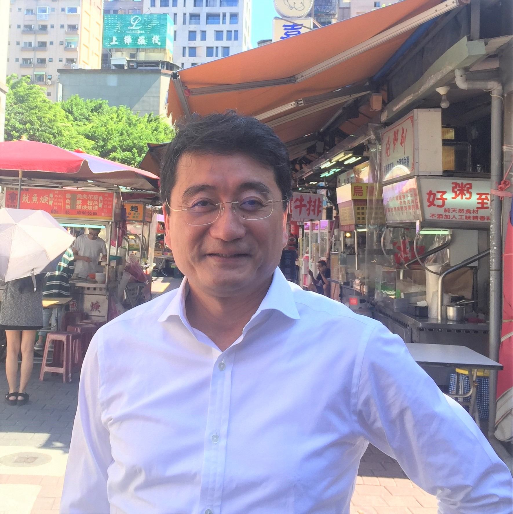

Prof. Nakamura
- 
-
中央大学国際経営学部 教授
中村 潤 Nakamura Jun
経歴（ビジネス）
1986 - 2000
伊藤忠商事株式会社
2000 - 2011
プライスウォーターハウスクーパース株式会社
2011 - 2015
ボルボ
2016 -
株式会社ジェナックスアソシエイツ 監査役
2016 -
株式会社ダブルフォース 監査役
2018 -
株式会社ロベリア 監査役
2015 - 2019
パーソルAVCテクノロジー株式会社 代表取締役副社長
2019 -
パーソルAVCテクノロジー株式会社取締役
2014 - 2019
ザイオネックス株式会社 監査役
経歴（アカデミック）
2007 - 2018
金沢工業大学 客員教授
2016 - 2019
芝浦工業大学 工学マネジメント研究科 教授
2019 -
中央大学国際経営学部 教授
研究業績
Quiz
中村教授の4歳までの名前はなんでしょう？
『めぐみ』、『めーちゃん』
中村教授が全日本オープンで優勝したスポーツはなんでしょう？
『ヨット(470級)』
中村教授ならではの経験はなんでしょう？（その１）
コートジボワールの大統領専用機に搭乗した
中村教授ならではの経験はなんでしょう？（その２）
ファッション雑誌『CanCam』に掲載された
中村教授の第二の故郷はどこでしょう？
アルジェリア